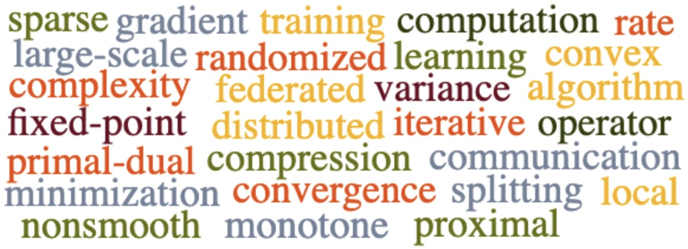

|
|
Laurent Condat
Senior Research Scientist
AI initiative
Building 12, Office 3122
|
Optimization: deterministic and stochastic algorithms, convex relaxations. Applications to machine learning, signal and image processing
|
 |
About me: I got my PhD in 2006
from Grenoble Inst. of Tech., Grenoble, France.
After 2 years as a postdoc in Munich, Germany,
I was recruited as a permanent researcher by the CNRS in 2008. I spent 4 years in the GREYC, Caen, and 7 years in GIPSA-Lab, Grenoble. Since Nov. 2019, I am on leave from the CNRS and a senior researcher at KAUST.
News
[Sep. 24]
Our paper "Near-Linear Time Projection onto the l1,infinity Ball; Application to Sparse Autoencoders"
has been accepted at IEEE Int. Conf. Tools with Artificial Intelligence (ICTAI) 2024.
[June 24]
Our paper "Prune at the Clients, Not the Server: Accelerated Sparse Training in Federated Learning" is on arXiv.
[May 24]
Our paper "A Simple Linear Convergence Analysis of the Point-SAGA Algorithm" is on arXiv.
[May 24]
Our paper "Stochastic Proximal Point Methods for Monotone Inclusions under Expected
Similarity" is on arXiv.
[May 24] I am presenting a poster on
TAMUNA
at the
Stochastic Numerics and Statistical Learning: Theory and Applications Workshop 2024, KAUST.
[Mar. 24]
Our paper "FedComLoc: Communication-Efficient Distributed Training of Sparse and Quantized Models" is on arXiv.
[Mar. 24]
Our paper "LoCoDL: Communication-Efficient Distributed Learning with Local Training and Compression" is on arXiv.
[Jan. 24] I will give a talk on our
RandProx algorithm at the Workshop on Nonsmooth Optimization and Applications
(
NOPTA 2024), Antwerp, Belgium, April 8-12 2024.
[Dec. 23] Our
TAMUNA algorithm is being presented as a
poster
by Peter at the Int. Workshop on Federated Learning in the Age of Foundation Models in Conjunction with NeurIPS 2023 (
FL@FM-NeurIPS’23), New Orleans, USA.
[May 23] We improved our algorithm TAMUNA for federated learning, which now features local training and compression, and updated
the paper on arXiv.
[May 23]
Our paper about Scafflix, a new algorithm for personalized federated learning, is on arXiv.
[May 23] Our tutorial
paper on primal-dual proximal algorithms was finally published in
SIAM Review:
link.
[Mar. 23]
Our paper "Joint Demosaicing and Fusion of Multiresolution
Coded Acquisitions: A Unified Image Formation and
Reconstruction Method" has been accepted to
IEEE Transactions on Computational Imaging.
[Mar. 23] I received the Meritorious Service Award in recognition of my "exceptional contribution as a peer reviewer to
Mathematical Programming".
[Feb. 23]
Our paper "TAMUNA: Accelerated Federated with Local Training and Partial Participation" is on arXiv.
[Jan. 23] Our RandProx
paper has been accepted at ICLR 2023.
[Nov. 22] I am in
Stanford's list
of the world's top 2% most influential scientists.
[Oct. 22]
Our paper "Provably Doubly Accelerated Federated : The First Theoretically Successful Combination of Local Training and Compressed Communication" is on arXiv.
[Oct. 22] Our RandProx
paper has been accepted for presentation at the NeurIPS Workshop on Optimization for Machine Learning (OPT2022).
[Sep. 22]
Our paper "EF-BV: A Unified Theory of Error Feedback and Variance Reduction Mechanisms for Biased and Unbiased Compression in Distributed Optimization" has been accepted at NeurIPS 2022.
[July 22]
Our paper "RandProx: Primal-Dual Optimization Algorithms with Randomized Proximal Updates" is on arXiv.
[July 22] I have been promoted to Senior Research Scientist.
[June 22]
Our paper "MURANA: A Generic Framework for Stochastic Variance-Reduced Optimization" has been accepted at MSML 2022.
[May 22]
My paper "Tikhonov regularization of circle-valued signals" has been accepted to
IEEE Transactions on Signal Processing.
[May 22]
Our paper "Dualize, split, randomize: Toward fast nonsmooth optimization algorithms" has been accepted to
Journal of Optimization Theory and Applications.
[May 22]
Our paper "EF-BV: A Unified Theory of Error Feedback and Variance Reduction Mechanisms for Biased and Unbiased Compression in Distributed Optimization", written earlier this year, is on arXiv.
[Apr. 22] Our tutorial
paper "Proximal Splitting Algorithms for Convex Optimization: A Tour of Recent Advances, with New
Twists" has been accepted to
SIAM Review.
[Jan. 22]
Our paper "Distributed Proximal Splitting Algorithms with Rates and Acceleration" has been published in
Frontiers in
Signal Processing.
Link
[Jan. 22]
Our paper "An Optimal Algorithm for Strongly Convex Minimization under Affine Constraints" accepted at AISTATS 2022.
[Dec. 21] Our tutorial
paper has been revised, again. The title has changed to "Proximal Splitting Algorithms for Convex Optimization: A Tour of Recent Advances, with New
Twists".
[Nov. 21]
Daniele Picone, whose work I co-supervised with Mauro Dalla Mura, defended his PhD. Congratulations Daniele!
[Apr. 21] I have been appointed as an Associate Editor for IEEE Transactions on Signal Processing.
[Feb. 21]
Julien Baderot, whose work I co-supervised with Michel Desvignes and Mauro Dalla Mura, defended his PhD. Congratulations Julien!
[Nov. 20] 3 papers accepted for presentation: 2 at the NeurIPS Workshop on Optimization for Machine Learning (OPT2020) and 1 at the NeurIPS Workshop on Scalability, Privacy, and Security in Federated Learning (SpicyFL 2020).
[Oct. 20] 2 new papers on arXiv:
the paper "Distributed Proximal Splitting Algorithms with Rates and Acceleration" and
the paper "Optimal Gradient Compression for Distributed and Federated Learning".
[Oct. 20] Our overview
paper on proximal splitting, with new relaxation results, has been revised. The title has been changed from "Splitting Algorithms: Relax them all!" to "Proximal Splitting Algorithms: A Tour of Recent Advances, with New Twists".
[July 20]
My paper
"Atomic norm minimization for decomposition into complex exponentials and optimal transport in Fourier domain" accepted to
Journal of Approximation Theory.
Link
[June 20]
Our paper
"From local SGD to local fixed point methods for federated learning" accepted at ICML 2020.
Link
[May 20]
Our paper on optical tomography was chosen for
the cover of the journal
Sensors.